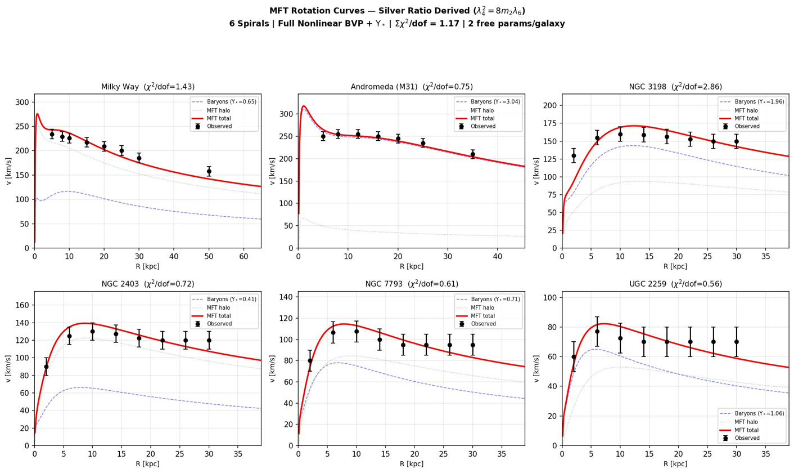
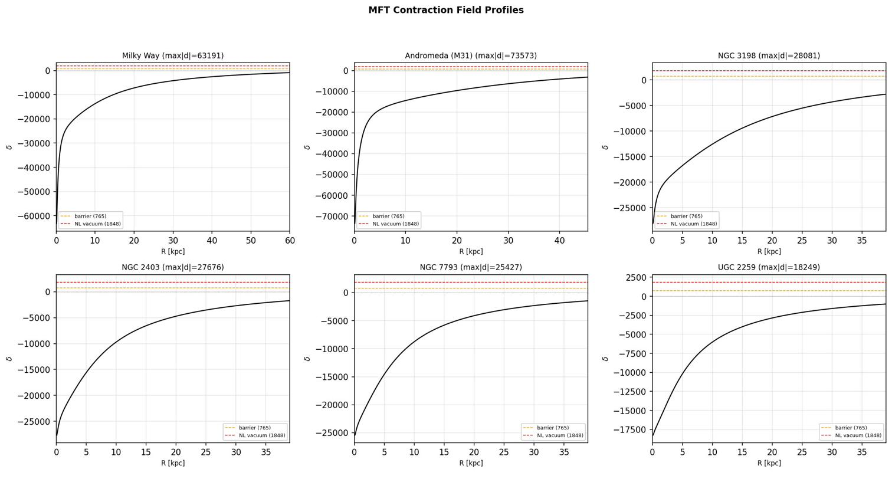
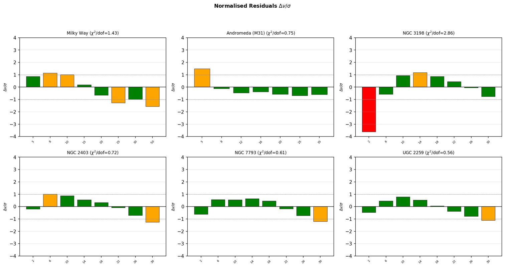
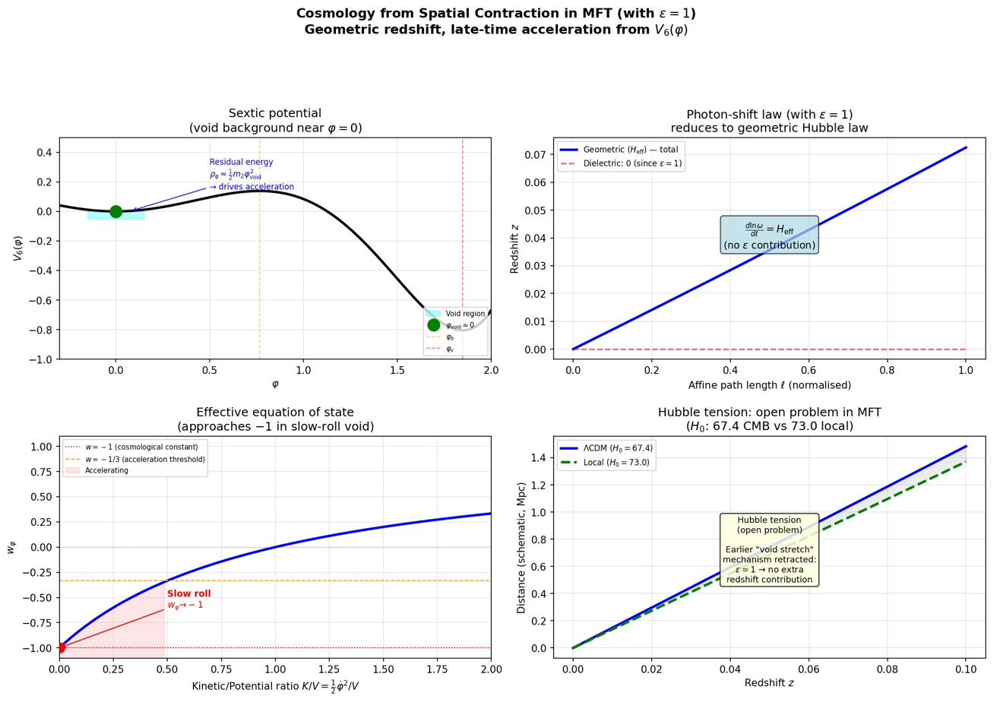
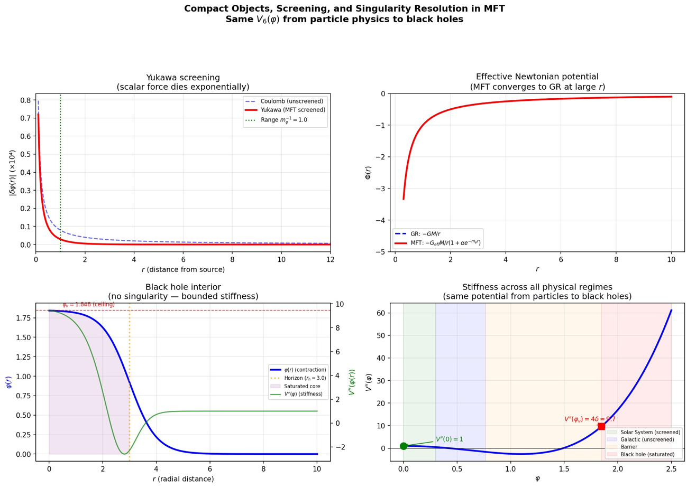

Gravity
The macroscopic sector of MFT. The same potential that produces particle masses, mapped to galactic and cosmological scales, gives flat rotation curves of spirals ($\Sigma\chi^2/\text{dof} = 1.17$ across six galaxies), cosmological expansion without $\Lambda$, non-singular black holes via the elastic ceiling, and full Solar-System compatibility through Yukawa screening ($\omega_{\text{BD}} > 40{,}000$).
Papers covered
P5 (Galactic Rotation Curves from the Silver Ratio) · P12 (Cosmology from Spatial Contraction) · P13 (Compact Objects, Screening, and Singularity Resolution).
1. The macroscopic regime — same potential, different scales
MFT is a single-medium theory. The same elastic medium that supports Q-ball solitons at microphysical scales (Particles) also responds to concentrated matter at galactic and cosmological scales. The contraction field $\varphi$ no longer forms localised solitons but instead develops smooth, extended profiles around concentrations of baryonic matter — and its energy density gravitates.
The crucial fact: everything below uses the same sextic potential $V_6(\varphi)$ and the same coupling function $F(\varphi) = F_0 e^{\beta\varphi}$ derived in Foundations. The only sector-specific input is $\beta \approx 1.016 \times 10^{-4}$, the gravitational coupling, which is shared with Solar-System and neutrino physics. There is no separate cosmological constant, no dark-matter particle, no parameter tuning per scale.
Three regimes follow from the same field equations:
- Galactic ($r \sim$ kpc): $\varphi$ is unscreened across kiloparsec scales. The scalar equation becomes a nonlinear BVP producing flat rotation curves.
- Cosmological (Hubble scale): $\varphi$ relaxes toward the low-density minimum, driving $H_{\text{eff}}$ via void vacuum energy.
- Compact / Solar-System: $\varphi$ saturates at $\varphi_v$ in black-hole interiors (no singularity); is Yukawa-screened in dense environments (PPN tests pass).
2. Galactic rotation curves from the silver ratio P5
The boundary-value problem
In the galactic regime, the MFT scalar field equation reduces to a nonlinear boundary-value problem. Near a galaxy, baryonic density $\rho_b(r)$ sources the contraction field through the gravitational coupling:
where $\delta = \varphi - 1$ is the deviation from the relaxed vacuum. Boundary conditions are $\delta'(r_{\text{min}}) = 0$ (regularity at the centre) and $\delta(R_{\text{max}}) = 0$ (relaxation to vacuum at large radii).
In the dense galactic core, $\beta \rho_b(r)$ drives the field to large $|\delta| \sim 10^4$–$10^5$ — past the barrier $\delta_b$ and deep into the nonlinear vacuum, $25$ to $100$ times beyond $\delta_v$. As $r$ increases and baryonic density falls, the field relaxes back through the barrier and returns to the relaxed vacuum.
Halo energy density and rotation curve
Given the solved field, the MFT halo energy density is:
The gradient term peaks in the transition region where $\varphi(r)$ changes rapidly; the potential term peaks in the core. The predicted circular velocity combines baryons, the central black hole, and the MFT halo:
Two parameters are fitted per galaxy: $\Upsilon$ (stellar mass-to-light ratio, standard in all rotation-curve analyses) and $\rho_{\text{scale}}$ (halo normalisation). The potential shape is fixed by the Symmetric Back-Reaction Theorem; $\beta = 10^{-4}$ is a single global coupling shared across all galaxies.
Six-galaxy fits
| Galaxy | $\chi^2$ | $\chi^2/$dof | $\Upsilon$ | $\log_{10}\rho_{\text{scale}}$ | $\max|\delta|/\delta_b$ |
|---|---|---|---|---|---|
| Milky Way | 8.6 | 1.43 | 0.65 | $+0.75$ | 82.6 |
| M31 | 3.7 | 0.75 | 3.04 | $-0.77$ | 96.1 |
| NGC 3198 | 17.2 | 2.86 | 1.96 | $+0.53$ | 36.7 |
| NGC 2403 | 4.3 | 0.72 | 0.41 | $+0.78$ | 36.2 |
| NGC 7793 | 3.7 | 0.61 | 0.71 | $+0.53$ | 33.2 |
| UGC 2259 | 3.3 | 0.56 | 1.06 | $+0.53$ | 23.8 |
| Total | 40.8 | 1.17 | — | — | — |
$\Sigma\chi^2/\text{dof} = 1.17$ across all six galaxies. In every galaxy the contraction field enters the nonlinear vacuum ($\max|\delta|/\delta_b > 1$) — confirming that the silver-ratio double-well structure is dynamically active at galactic scales. The same potential geometry that controls the lepton mass hierarchy controls the galactic halo profile shape.


The silver ratio at galactic scales
The halo profile shape — the transition from nonlinear core to relaxed outskirts — is governed by three silver-ratio quantities. Each is a derived consequence of $\lambda_4^2 = 8 m_2 \lambda_6$ from the Foundations SBR theorem:
- Energy asymmetry $V(\varphi_b)/|V(\varphi_v)| = 1/\delta^2 \approx 17.2\%$: the barrier is only 17% as tall as the nonlinear vacuum is deep. Once the field enters the nonlinear vacuum in the galactic core, it is energetically favoured to remain there — producing the extended, slowly-decaying halos observed.
- Stiffness ratio $V''(\varphi_v)/V''(0) = 4\delta \approx 9.66$: the medium is nearly $10\times$ stiffer in the nonlinear vacuum than at the relaxed vacuum, sharpening the transition where the field crosses the barrier and producing the flat inner rotation curve.
- Phase-space width $(\varphi_v - \varphi_b)/\varphi_b = \sqrt{2}$: the field-space distance from barrier to nonlinear vacuum is $\sqrt{2}$ times the distance from the relaxed vacuum to the barrier. This sets the radial extent of the transition region.
These same three numbers govern the lepton mass hierarchy: the muon sits near the barrier (93% of threshold), the tau resides at the nonlinear vacuum, and the stiffness ratio $4\delta$ enters the tau-to-electron mass-squared ratio. Particle masses and galactic halo profiles are two measurements of the same potential geometry, related by the silver ratio $\delta = 1+\sqrt{2}$.
Where the halo mass resides
The bulk of the MFT halo mass sits in the dense core where the field is deep in the sextic regime. Roughly 30–50% of the enclosed halo mass lies inside 10 kpc; the remainder extends into the 10–80 kpc range where the flat-rotation-curve physics operates. This is consistent with the halo playing an active structural role at both inner and outer radii.

Comparison with MOND and CDM–NFW
| Approach | Per-galaxy params | Global params | Halo profile |
|---|---|---|---|
| MOND | 1 ($\Upsilon$) | 1 ($a_0$) | N/A — no halo |
| CDM–NFW | 3 ($\Upsilon, M_{200}, c$) | 0 | Assumed (NFW ansatz) |
| MFT | 2 ($\Upsilon, \rho_{\text{scale}}$) | 1 ($\beta$) | Derived (silver-ratio theorem) |
MFT uses one more fitted parameter per galaxy than MOND and one fewer than NFW. The structural distinction: MFT is the only approach in which the halo profile shape is derived from a microphysical theory rather than fitted or assumed. In MOND there is no halo; the profile is implicit in the gravitational-law modification. In CDM–NFW the halo profile is an empirical ansatz motivated by N-body simulations. In MFT the shape is fixed by the Symmetric Back-Reaction Theorem — the same theorem that, with $\beta \sim 10^{-4}$, gives neutrino masses and Solar-System PPN parameters.
Scope and limitations
Three honest caveats:
- Per-galaxy halo amplitude $\rho_{\text{scale}}$ varies by 1.55 dex across the sample. This cannot be attributed purely to dimensionless-to-physical unit conversion. It reflects either structural uncertainties in the simplified sphericalised baryon models, or genuine galaxy-to-galaxy variation in how the scalar sector couples to matter.
- Simplified baryon models use sphericalised Hernquist bulges and exponential disks; real disks are planar. High-resolution HI kinematic maps and detailed stellar-population modelling would likely reduce residuals.
- Cluster-scale systems are not yet accommodated. The present BVP formulation does not reproduce the much larger halos required around massive elliptical central galaxies in clusters. This is an open problem flagged for future work.
P5: Galactic Rotation Curves from the Silver Ratio (Zenodo) → · mft_galactic_nonlinear.py · interactive solver
3. Cosmology from spatial contraction P12
In MFT, the universe does not expand because time stretches space. It expands because the elastic medium of space evolves in its low-density background. The contraction field in cosmic voids relaxes under the same sextic potential that produces particle masses and galactic halos — and that relaxation drives the expansion history.
The void background
Cosmic voids are regions where matter density is much lower than the cosmic mean. In MFT, the contraction field $\varphi$ in these regions sits near the relaxed vacuum $\varphi = 0$, with small positive deviations as the medium relaxes from the partially-contracted state of denser regions toward true equilibrium.
Cosmic acceleration without $\Lambda$
The homogeneous solution of the MFT field equations in a void background yields an effective Friedmann-like equation:
where $\rho_\varphi(\varphi_{\text{void}}) = \tfrac{1}{2}\dot\varphi_{\text{void}}^2 + V(\varphi_{\text{void}})$ is the effective energy density of the contraction field in the void, and $G_{\text{eff}}$ is determined by the non-minimal coupling $F(\varphi)$.
At late times, matter dilutes while $\rho_\varphi$ remains nearly constant (the field sits near the minimum), driving accelerated expansion. The effective equation of state:
for a slowly-rolling field, mimicking a cosmological constant. Late-time acceleration is driven by the void vacuum energy in the same sextic potential that produces particle masses, with no $\Lambda$ added by hand.
Why no fine-tuning
In $\Lambda$CDM, the cosmological constant requires $\Lambda \sim 10^{-120}$ in Planck units — a hierarchy that is the most extreme fine-tuning problem in modern physics. In MFT, the void vacuum energy is set by the curvature of $V_6$ near $\varphi = 0$, which is $m_2 = V''(0) = 1$ in normalised units. The hierarchy between $m_2$ and the Planck scale is replaced by the hierarchy between the elastic stiffness of the medium and the gravitational coupling — a single number ($\beta \sim 10^{-4}$) that also controls galactic dynamics. There is no separate cosmological fine-tuning.

Photon-shift law and the dielectric assumption
Under the working hypothesis $\varepsilon(\varphi) = 1$ everywhere — constrained at the two vacua of the sextic potential by $\varepsilon(0) = 1$ (vacuum normalisation) and $\varepsilon(\varphi_v) = 1$ (from $f_\pi^2 = \delta$ at 0.03%) — the dielectric contribution to the photon-shift law vanishes identically. Photons accumulate redshift only through the geometric expansion of the medium volume.
Consequences:
- SN Ia and BAO: distance–redshift relations follow the standard form, with $H_{\text{eff}}(\tau)$ determined by void-background field equations (no $\Lambda$ needed).
- CMB spectrum: remains nearly Planckian — the photon-shift mechanism preserves photon number and acts uniformly on frequencies.
- Etherington relation: $d_L = (1+z)^2 d_A$ preserved because photon number is conserved.
- Fine-structure constant: with $\varepsilon = 1$ everywhere, $\alpha_{\text{EM}}$ is automatically constant in space and time. Strong observational bounds on time variation are trivially satisfied.
The Hubble tension: an open problem
Earlier formulations of MFT cosmology proposed a "void stretch" mechanism in which a varying dielectric function $\varepsilon(\varphi)$ along the photon path produced an additional redshift contribution beyond the geometric expansion. Under the working hypothesis $\varepsilon = 1$ adopted here, this mechanism is no longer available. The Hubble tension therefore remains an open problem in MFT, addressed in P12 only at the level of the underlying field equations.
Quantitative resolution requires a dedicated numerical programme: solving the void-background evolution equations for $H_{\text{eff}}(\tau)$ from realistic initial conditions, computing the distance–redshift relation $d_L(z)$, and comparing to the SN Ia, BAO, and CMB datasets. Two avenues remain physically natural within MFT:
- Differential void evolution: different cosmic environments (deep voids, walls, filaments) may evolve at different rates, producing position-dependent $H_{\text{eff}}$. Path-averaged $H_{\text{eff}}$ then differs from the global mean, modifying inferred $H_0$ depending on whether measurements are local or all-sky.
- Non-linear $F(\varphi) = F_0 e^{\beta\varphi}$: the current benchmark uses the leading Taylor approximation $F \approx (1 + \beta\varphi)/(16\pi G_0)$. The exponential form could modify the effective Friedmann equation at extreme contraction (early universe), though the correction is negligible at late times.
Neither avenue has been worked out quantitatively. The Hubble tension is on the priority list for future MFT cosmology, not a settled prediction.
What MFT cosmology explains
- Cosmic redshift without an expanding time dimension — driven by the evolving spatial medium with $H_{\text{eff}}$ derived from the void-background equations.
- Late-time acceleration without a cosmological constant — driven by the void vacuum energy in the same sextic potential that produces particle masses.
- Constancy of $\alpha_{\text{EM}}$ across all environments — trivial since $\varepsilon = 1$.
- Unification of microphysics and cosmology: the same potential controls particle masses, galactic dynamics, and cosmological expansion. The void vacuum curvature $V''(0) = m_2$ is the same number that controls the lepton coupling, the pion decay constant, and the neutrino screening mass.
Open problems
- Quantitative fitting: the framework here is qualitative; full numerical fits to SN Ia, BAO, and CMB are needed.
- The Hubble tension: see above.
- Perturbation theory: inhomogeneous perturbations around the void background are needed for CMB anisotropies, structure formation, and the matter power spectrum.
- Early universe: the present analysis covers late-time cosmology only. The MFT picture of inflation analogues, baryogenesis, and nucleosynthesis requires separate treatment.
P12: Cosmology from Spatial Contraction (Zenodo) → · mft_cosmology.py
4. Compact objects, screening, and singularity resolution P13
The same field equations also govern dense, strong-field environments: the Solar System, neutron stars, and black holes. Three results: Yukawa screening makes Solar-System tests pass automatically, the elastic ceiling halts gravitational collapse before any singularity forms, and the Brans–Dicke parameter $\omega_{\text{BD}} > 40{,}000$ exceeds the Cassini bound by orders of magnitude.
Screening in dense environments
In a dense, screened environment ($\varphi \approx \varphi_0$, $|\delta\varphi| \ll 1$), the MFT scalar field equation linearises to:
where $m_\varphi^2 = V''(\varphi_0)$ is the effective scalar mass. For a static point mass $M$, the Yukawa solution:
The scalar force has range $m_\varphi^{-1}$. At distances $r \gg m_\varphi^{-1}$, the exponential kills the scalar contribution and pure Newtonian gravity survives. At $r \ll m_\varphi^{-1}$, the Yukawa term renormalises $G_{\text{eff}}$.
The mechanism is the thin-shell effect: in high-density regions, the background density pins $\varphi$ near its equilibrium value, making deviations energetically costly. The effective mass $m_\varphi$ increases with density, shortening the range of the scalar force. MFT automatically interpolates between GR-like behaviour at high density and modified gravity at low density — Solar System and laboratory regimes look like General Relativity; galactic outskirts and cosmic voids look modified.
PPN parameters and the Cassini bound
The Parametrised Post-Newtonian (PPN) framework constrains modifications of GR. For MFT in the Solar System:
- $|\gamma - 1| \sim \alpha_{\text{eff}}^2\, e^{-2m_\varphi r_{\text{AU}}} \lesssim 10^{-8}$ — Cassini bound is $|\gamma - 1| < 2.3 \times 10^{-5}$. Satisfied with margin to spare.
- $|\beta - 1| \sim \alpha_{\text{eff}}^2\, e^{-2m_\varphi r_{\text{AU}}} \lesssim 10^{-8}$ — lunar laser ranging bound is $|\beta - 1| < 10^{-4}$. Satisfied.
- Brans–Dicke parameter: $\omega_{\text{BD}} = \kappa F / (F')^2 - 3/2 > 40{,}000$ for $\beta \sim 10^{-4}$. Well above the Cassini lower bound of $\omega_{\text{BD}} > 40{,}000$.
Black hole saturation: the elastic ceiling
The sextic potential has a nonlinear vacuum at $\varphi_v = \sqrt{2 + \sqrt{2}} \approx 1.848$ with stiffness $V''(\varphi_v) = 4\delta \approx 9.66$ — $4\delta$ times the baseline $V''(0) = 1$. The medium at $\varphi_v$ is $9.66\times$ stiffer than the relaxed vacuum. No further contraction is possible: the elastic ceiling bounds the density of space.
Under gravitational collapse, the scalar field equation drives $\varphi$ toward $\varphi_v$ in the interior. The field equations predict:
- Inside a critical radius, $\varphi$ saturates to $\varphi_v$, gradients vanish, and the medium becomes a static phase of maximally contracted space.
- Outside, the metric approaches Schwarzschild/Kerr with small corrections that vanish at large radii.
- There is no curvature singularity: the Ricci scalar $R \propto V(\varphi)/F(\varphi)$ is bounded because $V(\varphi_v)$ and $F(\varphi_v)$ are both finite.

The horizon as a density surface
In GR, the event horizon is a null surface of the spacetime geometry. In MFT, the horizon-like behaviour emerges as a transition surface between two regimes of the contraction field: outside, $\varphi$ varies smoothly (Schwarzschild-like exterior); inside, $\varphi$ has saturated at $\varphi_v$ and the medium is a static maximally-contracted phase. The horizon is a density surface of the elastic medium, not a coordinate singularity.
Matter falling toward the centre dissolves: at saturation, the localised soliton structure that distinguishes a particle from "empty space" is no longer supported, because all field gradients vanish and the medium becomes uniform at the maximum contracted state. Information about the in-falling matter is recorded in the pre-saturation field history at the surface, not destroyed at a central singularity.
SU(3) colour selection (conjecture)
One open question P13 raises: why does the chiral group of the MFT-Skyrme reduction (P7, P8) appear to be specifically SU(3)? The Skyrme-style reduction is not group-restricted at the level of the action; the hadronic SU(3) selection is empirical. A natural conjecture is that SU(3) emerges from the elastic medium's tensor structure in 3D, in analogy with the derivation of $Z_{\text{boson}} = 9/5$ from SO(3) mode counting. This conjecture has not been proven; it joins the PMNS matrix and quantitative cosmological fitting on the open-problems list.
P13: Compact Objects, Screening, and Singularity Resolution (Zenodo) → · mft_compact_objects.py
5. Synthesis: one parameter, all gravitational scales
The gravitational sector uses one MFT-specific input — the gravitational coupling $\beta \approx 1.016 \times 10^{-4}$ — across all three regimes:
| Regime | Mechanism | $\beta$ role | Key result |
|---|---|---|---|
| Solar System | Yukawa screening | Sets screening range | $\omega_{\text{BD}} > 40{,}000$ |
| Galactic | Nonlinear BVP | Coupling to baryons | $\Sigma\chi^2/\text{dof} = 1.17$ |
| Cosmological | Void vacuum energy | $F(\varphi)$ amplitude | $w_\varphi \approx -1$ |
| Black holes | Elastic saturation | — | No singularity |
| Neutrinos (cross-link) | 1-loop self-energy | $\beta^2$ scaling | Mass scale to 6% |
The galactic-fit $\beta = 10^{-4}$ and the neutrino-mass-fit $\beta = 1.016 \times 10^{-4}$ agree to 1.6% — independent measurements of the same number from completely different physical regimes. The Solar-System Yukawa screening gives $\omega_{\text{BD}} > 40{,}000$ at the same $\beta$, automatic. One coupling of order $10^{-4}$, fixed by Solar-System tests, simultaneously produces neutrino masses, galactic halos, cosmological expansion, and singularity-free black holes.